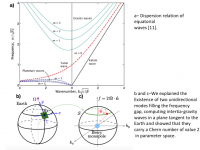

Wave Topology in Fluids - projet ANR¶
Coordination : Antoine Venaille
Partenaires ENS de Lyon : Denis Bartolo, Pierre Delplace, David Carpentier, Xavier Chartrand (Laboratoire de Physique)
Expert analyse numérique et calcul scientifique : Cerasela Calugaru (représentant CBP/PSMN)
Wave Topology in Fluids (WTF) – (Laboratoire de Physique, 2018 – 2021) : Le concept de transport protégé topologiquement est né dans le contexte de de l’effet Hall quantique. Un essort sans précédent dans ce domaine est né quand les physiciens ont réalisé comment appliquer ces idées à des domaines aussi différents que la photonique ou la mécanique. Des ondes sont génériquement protégées du désordre quand elles se propagent entre des matériaux caractérisés par des invariants topologiques différents. Cette année, nous avons démontré que cette topologie explique l’émergence et la robustesse d’ondes unidirectionnelles dans les liquides des échelles microfluidiques aux échelles planétaires. Ces travaux pionniers constituent le point de départ de notre projet. Nous visons à établir les fondements de la topologie des ondes dans les fluides. Nous fournirons les premières démonstrations expérimentales de phase topologique dans les liquides, nous démontrerons leur omniprésence dans les écoulements géophysiques et astrophysiques, et nous expliquerons l’émergence de nouvelles ondes topologiques en l’absence de bords dans un système physique.
Contribution of CBP/PSMN¶
un support et expertise en informatique et calcul scientifique incluant l’installation et l’aide à l’utilisation du code DEDALUS, ainsi que pour leur développement/portage/débogage
développer un modèle d’écoulement shallow water bi-périodique, en mettant en place une méthode de pénalisation pour inclure les conditions aux limites
choix du jeu de tests et des cas de référence pour vérifier l’aptitude des codes à approximer les divers termes intervenant dans les équations
prise en main du code DEDALUS, portage sur les architectures des serveurs du PSMN (écriture d’un nouveau makefile, compilation, tests de fonctionnement et de performance); installation de packages/librairies nécessaires dans le projet, formation à l’utilisation du code sur les machines PSMN
expertise pour la soumission de calculs en utilisant le code MIT GCM
accompagnement et aide aux travaux numériques à des chercheurs participant au projet, avec le code MIT GCM et dans l’analyse et le post traitement de données; choix des outils numériques et de bibliothèques mathématiques
Venaille, A.& …, Periodicity Disruption of a Model Quasibiennial Oscillation of Equatorial Winds. Physical Review Letters, 122(21), 214504., https://journals.aps.org/prl/pdf/10.1103/PhysRevLett.122.214504